Portfolio · render options
Four looks for the same sky
Same stars, same content, same behaviour: only the rendering changes. The stills are a first impression; open each one live to see it move, and press L there to flip between them.
A · current
Night sky
Real stars in soft colour, thin star-chart lines that stop short of each star, and a gentle glow. Closest to what you saw last.
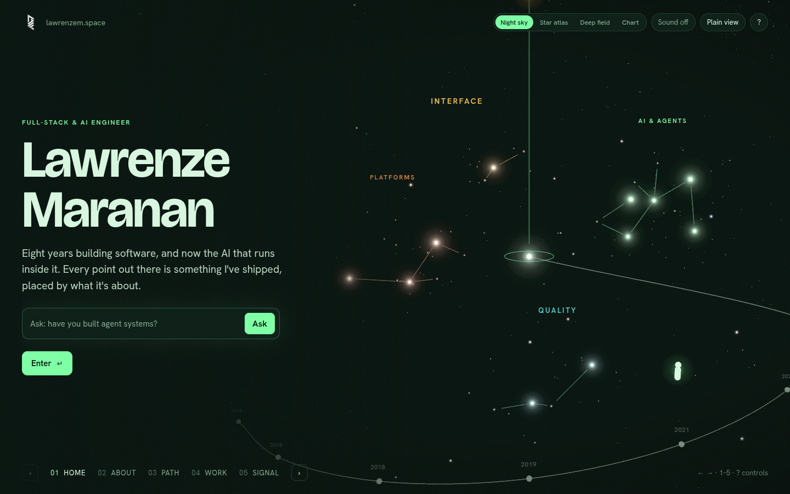
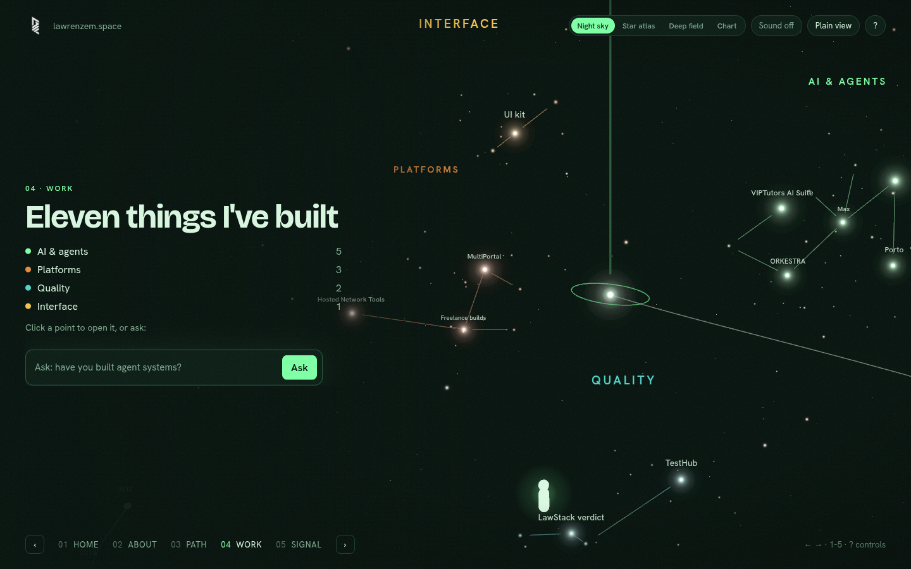
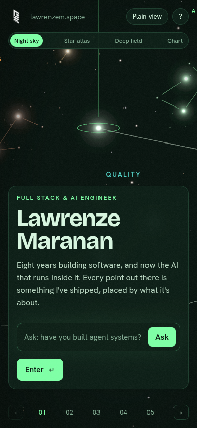
B · calm, scientific
Star atlas
An observatory chart: white stars, a faint grid of the sky, dashed constellation lines and no glow. Cluster colour lives only in the labels and the selection ring.
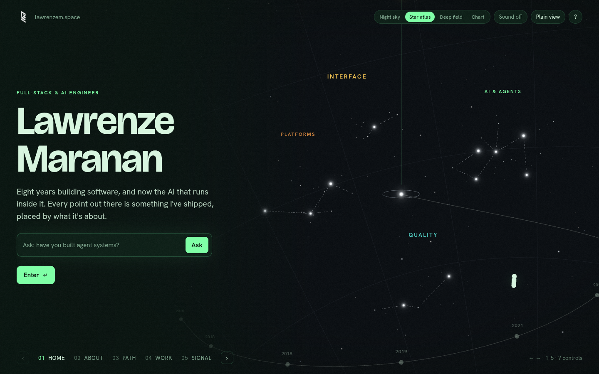
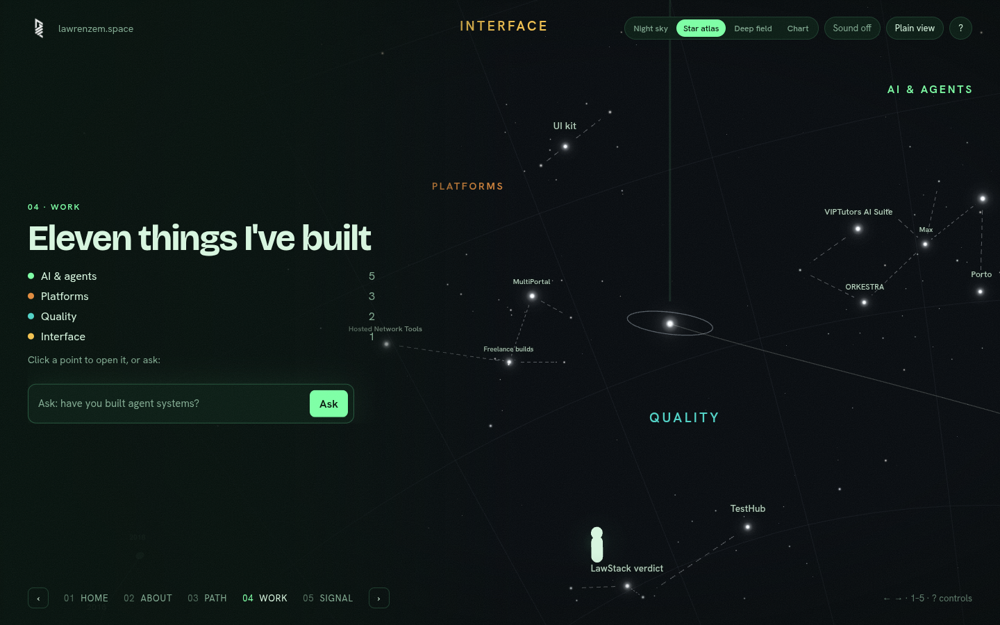
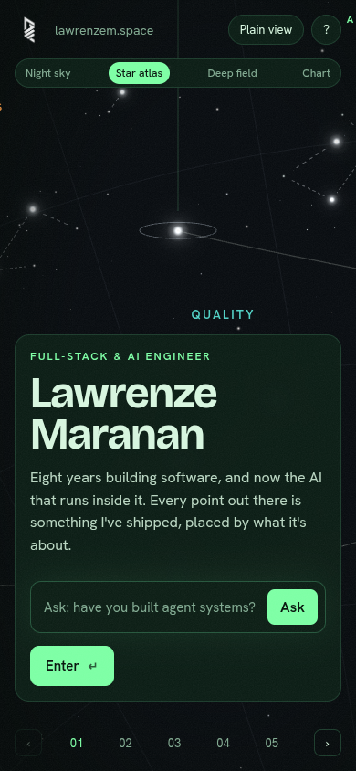
C · cinematic
Deep field
A telescope photograph: near-black space, diffraction spikes on the bright stars, and faint coloured nebulae behind each cluster. The richest of the four.
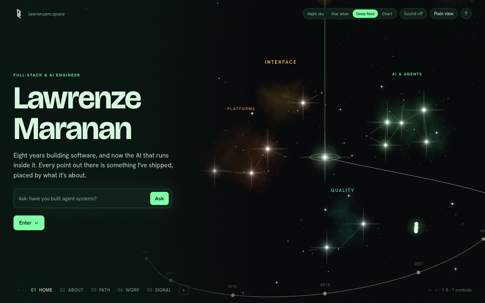
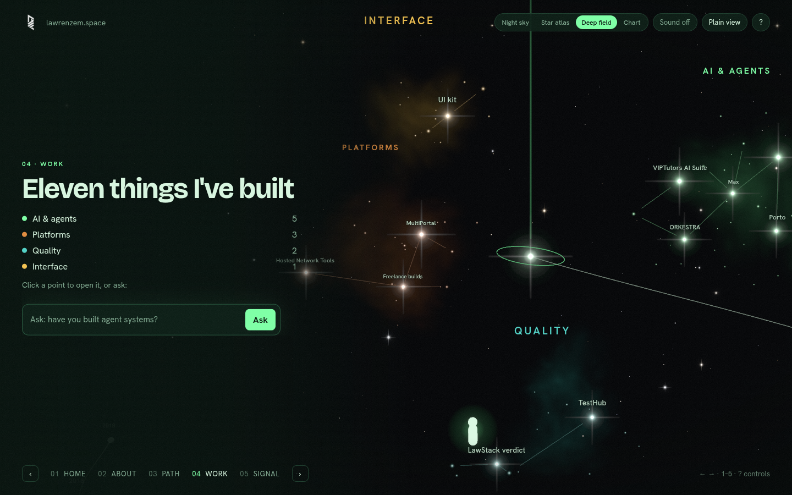
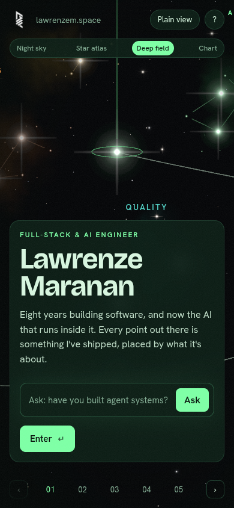
D · flat, graphic
Chart
A diagram rather than a photograph: crisp dots, solid lines, ringed markers for the projects and no glow at all. The most legible, the least "space".
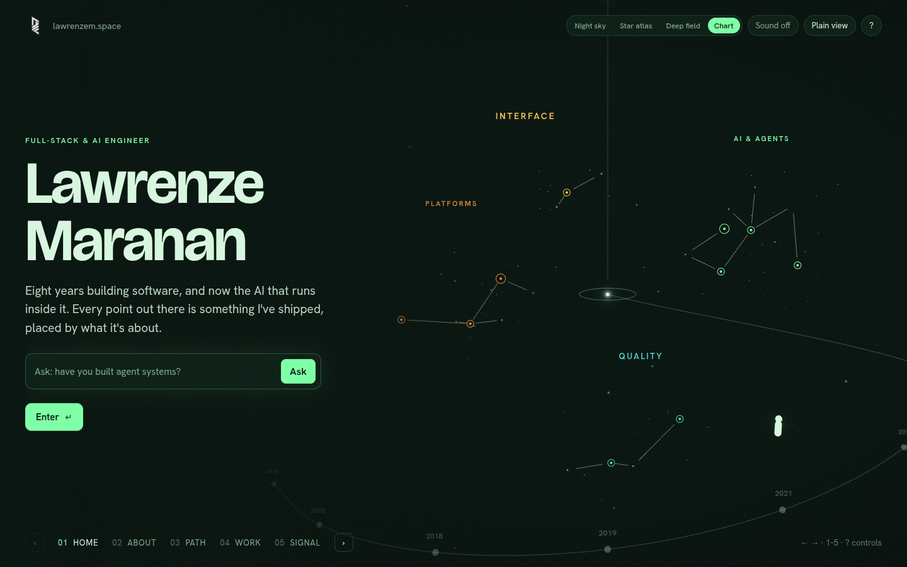
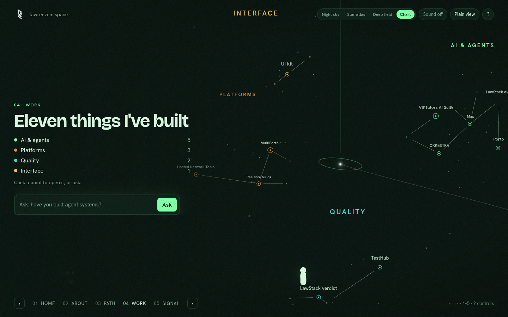
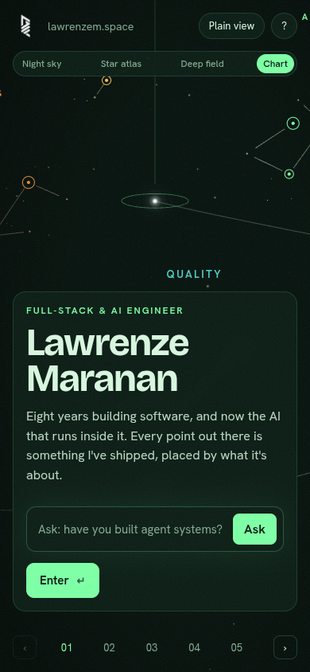